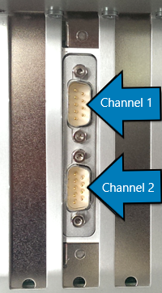
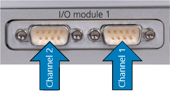
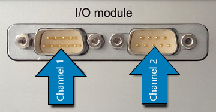

IO601 Pin Mapping
IO601 Pin Mapping — Reference information about the I/O module connector
I/O Pin Mapping for CAN and LIN:
| Pin | Channel 1 Signals (CAN & LIN) | Pin | Channel 2 Signals (CAN) |
|---|---|---|---|
| 1 | CAN-low (low speed) | 1 | CAN-low (low speed) |
| 2 | CAN-low | 2 | CAN-low |
| 3 | Ground | 3 | Ground |
| 4 | CAN-high (low speed) | 4 | CAN-high (low speed) |
| 5 | LIN | 5 | - |
| 6 | Ground | 6 | - |
| 7 | CAN-high | 7 | CAN-high |
| 8 | - | 8 | - |
| 9 | V-LIN (12 VDC, max 200 mA)[a] | 9 | - |
[a] For LIN operation, a 12 V DC power supply must be connected to pin 9 of connector 1. Every LIN transceiver that belongs to the same LIN network needs to be supplied by the same voltage source. | |||
For proper operation, a CAN topology requires electrical termination in the form of resistors.
The IO601 I/O module does not include termination resistors. The full resistor comes with the CAN module loopback cable provided by Speedgoat.
Channel Location
When the module is mounted vertically in the real-time target machine (Performance, Audio, Modular), channel 1 is on the top connector, and channel 2 is on the bottom connector. See the image below:

When the module is mounted horizontally in the real-time target machine (Mobile, Openframe, Education, Automation), the channel number depends on the orientation of the I/O module. See image below:


![[Caution]](images/caution.png) | Caution |
|---|---|
Please check the DSUB connector orientation, to identify the channel number. |